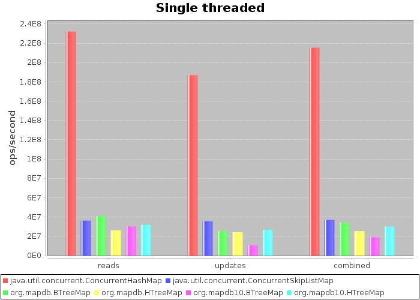
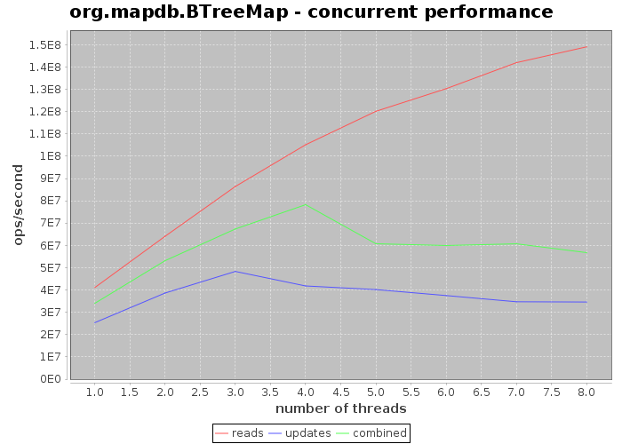
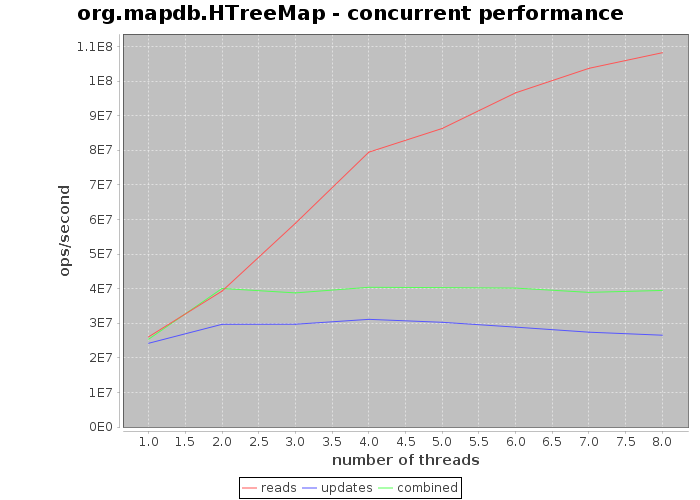
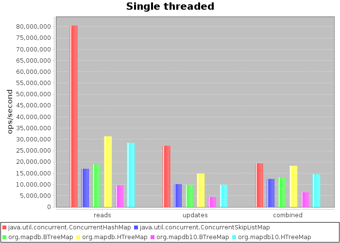
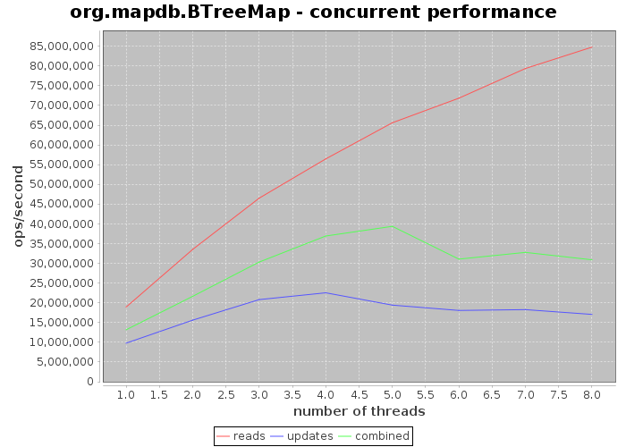
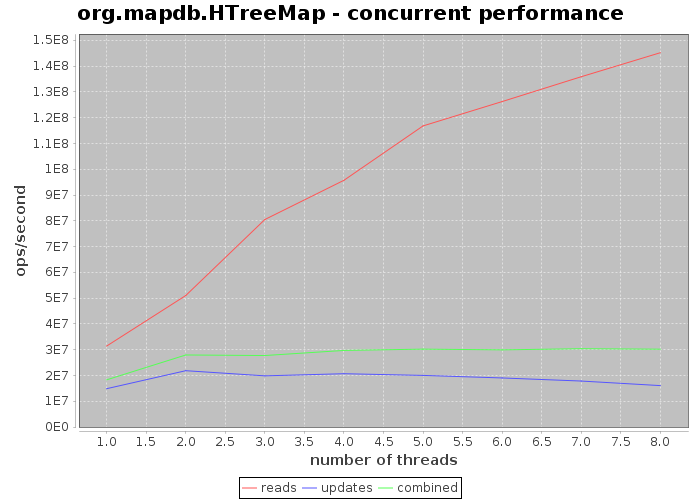

Goal for MapDB is to have speed comparable to java.util.concurrent collections such ConcurrentSkipListMap. MapDB does things like serialization on background, so it is not always possible, but its very close.
This benchmark compares various Map implementations. Benchmark sources are available in Github repo.
First benchmark tests Map<Long,UUID> map. It chooses small entry size (24 bytes), since its size affect performance.
TODO metrics
ConcurrentHashMap is about 8x faster than MapDB. Map size is 10 million items, so there is practically zero GC overhead. With larger sizes ConcurrentHashMap performance degrades due to GC overhead and MapDB will eventually become faster.
Also MapDB uses compression, so it consumes much less memory.
TODO chart of size scalability
TODO chart of memory usage depending on collection size
Chart bellow shows performance of BTreeMap from MapDB with number of threads on quad core CPU with 8 virtual cores.
And this is multi-threaded performance for HTreeMap (HashMap). There is bug in segment hashing, so it wont scale over 2 threads.
Second benchmark tests Map<String,String> with key and value size 32 bytes. This is unfortunate situation for MapDB since deserialization overhead is high.
MapDB 2.0 was all about optimizing deserialization costs and it pays of. Please notice performance difference between MapDB 1.0 and 2.0 collections.
Also HTreeMap is surprisingly fast compared to ConcurrentHashMap. String hashing probably adds fixed overhead.
And here is multi-threaded performance with String keys and values
 TODO BTreeMap external values
TODO BTreeMap node size
TODO: On disk benchmarks Will be added soon...